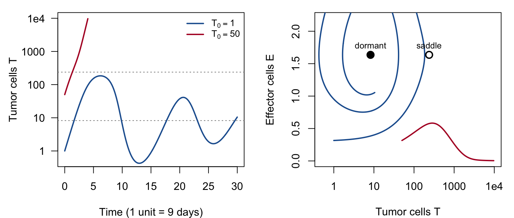

Chapter 5 Optimal Control
Mathematical models of cancer describe how tumor populations evolve over time and how they interact with the immune system, treatment, and their surrounding environment. While these models can provide insight into tumor dynamics and treatment response, they often assume that treatment is prescribed according to a fixed schedule.
Optimal control theory extends this framework by treating therapy as a time-dependent decision variable. Rather than simply predicting tumor evolution under a prescribed treatment, we seek a treatment strategy that optimizes a specified therapeutic objective.
In cancer modeling, this objective typically involves balancing tumor reduction against treatment-related toxicity, drug consumption, or damage to healthy tissue. The resulting mathematical problem combines a system of differential equations describing tumor dynamics with an objective functional measuring the performance of a treatment strategy.
Optimal control has been applied to several cancer treatment problems, including chemotherapy, immunotherapy, and combination therapy. Examples include studies of competing chemotherapy strategies, immune-mediated tumor dynamics, and treatment optimization in the presence of drug resistance (Fister and Panetta 2003; de Pillis and Radunskaya 2001; de Pillis et al. 2006; Carrère 2017).
This chapter introduces the mathematical foundations of optimal control for ordinary differential equation (ODE) models of cancer. We begin with the general formulation of an optimal control problem, followed by Pontryagin’s Maximum Principle and the derivation of the associated optimality system. A Gompertzian tumor-growth model is then used to illustrate the derivation and numerical solution of an optimal treatment strategy using the forward–backward sweep method.
Throughout the chapter, each new concept is followed by an example for a second model: a simplified version of the tumor–immune model of Kuznetsov et al. (1994), presented in Section 3.1, in which the tumor has no carrying capacity. The examples are numbered within the chapter, separately from the definitions and theorems.
5.1 Formulation of an Optimal Control Problem
An optimal control problem consists of three main components:
- A dynamical system describing the evolution of the state variables.
- A set of admissible controls representing the allowable interventions.
- An objective functional measuring the performance of different control strategies.
5.1.1 State equations, controls, and objective
Let \(x(t)\in\mathbb{R}^n\) denote the state vector, which may include tumor cells, immune effector cells, and drug concentrations, and let \(u(t)\in\mathbb{R}^m\) denote the treatment input, such as a chemotherapy infusion rate, a drug dose, or an immunotherapy input. Treatment is subject to clinical limits, so at each time the control takes values in a set \(U\subset\mathbb{R}^m\) of allowed treatment levels. For a single treatment input a common choice is \(U=[0,M]\), where \(M\) is the maximum allowable treatment intensity.
Example 1.1 (Simplified Kuznetsov model).
We use the Kuznetsov model of Section 3.1 in the dimensionless form (3.4)–(3.5) of Section 3.4, without immune resistance. One unit of \(E\) or \(T\) is \(10^6\) cells, and one unit of time is \(1/(n\cdot10^6)\approx 9.1\) days, with \(n\) from Table 3.1. We remove the carrying capacity of the tumor (\(b=0\)), so that without immune killing the tumor grows exponentially, and add chemotherapy with intensity \(u(t)\):
\[\begin{aligned} E'&=s+\frac{p\,E\,T}{g+T}-m\,E\,T-d\,E, &\qquad E(0)&=E_0,\\ T'&=a\,T-E\,T-\delta\,u(t)\,T, &\qquad T(0)&=T_0. \end{aligned}\] The parameters \(s\), \(p\), \(g\), \(m\), \(d\), and \(a\) have the meanings and dimensionless values of Table 3.2. The new term \(-\delta uT\) is the killing of tumor cells by the drug, at rate \(\delta\) per unit of treatment intensity. The state is \(x=(E,T)^\top\in\mathbb{R}^2\) and the control is scalar. The values used for treatment, cost, and initial conditions are listed in Table 5.1. :::
| Parameter | Value | Meaning |
|---|---|---|
| \(\delta\) | 2 | drug kill rate at full dose |
| \(M\) | 1 | maximum dose (fraction of the maximum tolerated dose) |
| \(A\), \(B\) | 1, 50 | weights in the objective functional |
| \(t_f\) | 20 | treatment horizon (about 180 days) |
| \(E_0\) | \(s/d\approx 0.316\) | resting level of effector cells |
| \(T_0\) | 50 | initial tumor (\(5\times10^7\) cells) |
Without treatment (\(u\equiv0\)), the tumor-free equilibrium \((s/d,0)\) is unstable, because \(s/d<a\) (Proposition 3.1, with \(n=1\) in dimensionless form); its eigenvalue in the tumor direction is \(a-s/d\approx 1.32\). With \(b=0\), the coexistence equilibria satisfy \(E=a\), and \(T\) solves \(s+paT/(g+T)-maT-da=0\). For the values of Table 3.2 there are two: a stable dormant state with \(T\approx 8.24\) (a stable spiral, with eigenvalues \(-0.036\pm 0.581\,i\)) and a saddle with \(T\approx 238.1\). Removing the carrying capacity changes these two equilibria only moderately (compare \(T_2\approx 8.19\) and \(T_3\approx 268\), in units of \(10^6\) cells, computed after Table 3.1), but it removes the large-tumor equilibrium \((E_4,T_4)\). Initial states on one side of the stable manifold of the saddle are attracted to the dormant state; on the other side the tumor grows without bound. Figure 5.1 shows that, with the immune system at its resting level \(E_0=s/d\), a tumor of \(T_0=1\) is controlled: it oscillates around the dormant state and slowly settles into it. A tumor of \(T_0=50\) escapes. Treatment therefore has a clear aim: to move the state into the region that the immune system controls.

Figure 5.1: Untreated simplified Kuznetsov model with \(E_0=s/d\). Left: a small tumor (\(T_0=1\)) oscillates around the dormant state and slowly settles into it, while a larger tumor (\(T_0=50\)) escapes; the simulation stops when \(T\) exceeds \(10^4\). Right: the same trajectories in the \((T,E)\) plane, with the dormant state (filled circle) and the saddle (open circle).
Definition: Admissible Controls.
Let \(U\subseteq\mathbb{R}^m\) represent the set of allowable control values. The set of admissible controls is
\[\mathcal{U} = \left\{ u:[0,t_f]\rightarrow U \mid u \text{ is Lebesgue measurable} \right\}.\]
For a scalar control with \(U=[0,M]\), the admissible controls satisfy
\[0\leq u(t)\leq M\]
for almost every \(t\in[0,t_f]\).
Example 1.3 (Admissible chemotherapy schedules).
In Example ?? the treatment intensity is measured as a fraction of the maximum tolerated dose, so \(U=[0,M]\) with \(M=1\). Every measurable schedule with values in \([0,1]\) is admissible. In particular, the ON–OFF schedule that gives the full dose for a time \(\tau_{\mathrm{on}}\) and then pauses for a time \(\tau_{\mathrm{off}}\),
\[u_{\tau_{\mathrm{off}}}(t)= \begin{cases} M, & \text{if } t-k(\tau_{\mathrm{on}}+\tau_{\mathrm{off}})\in[0,\tau_{\mathrm{on}}) \text{ for some integer } k\geq0,\\ 0, & \text{otherwise}, \end{cases}\]
is piecewise constant, hence measurable, and therefore admissible. Continuous treatment at full dose is the case \(\tau_{\mathrm{off}}=0\). Section ?? compares these schedules with the optimal control.
Definition: Optimal Control Problem.
Given the functions
\[g:[0,t_f]\times\mathbb{R}^n\times U \rightarrow\mathbb{R}^n,\]
\[f:[0,t_f]\times\mathbb{R}^n\times U \rightarrow\mathbb{R},\]
and
\[\phi:\mathbb{R}^n\rightarrow\mathbb{R},\]
the optimal control problem is to minimize
\[J(u) = \int_0^{t_f} f(t,x(t),u(t))\,dt + \phi(x(t_f))\]
over all \(u\in\mathcal{U}\), subject to the state equations
\[x'(t)=g(t,x(t),u(t)), \qquad x(0)=x_0, \qquad 0\leq t\leq t_f.\]
Here, \(f\) is the running cost, \(\phi\) is the terminal cost, and \(J\) is the objective functional.
For each admissible control \(u\), the corresponding solution \(x=x(u)\) is called the associated state.
Example 1.5 (An optimal control problem for the Kuznetsov model). For Example ?? we take
\[J(u)=\int_0^{t_f}\Bigl(A\,T(t)+\frac{B}{2}\,u(t)^2\Bigr)\,dt,\]
so that the running cost is \(f(t,x,u)=A\,T+\tfrac{B}{2}u^2\) and the terminal cost is \(\phi=0\). The first term is the accumulated tumor burden and the second the accumulated burden of treatment. The problem is to minimize \(J\) over \(u\in\mathcal{U}\) subject to the state equations of Example ??, with the values of Table 5.1.
Definition: Optimal Control and Optimal State.
An admissible control \(u^*\in\mathcal{U}\) is an optimal control if \(J(u^*)\) is finite and
\[J(u^*)\leq J(u) \qquad \text{for all }u\in\mathcal{U}.\]
The corresponding state \(x^*=x(u^*)\) is called the optimal state, and the pair \((x^*,u^*)\) is called an optimal pair.
Example 1.7 (The optimal control as a benchmark).
Since every ON–OFF schedule of Example ?? is admissible, Definition ?? gives \[J(u^*)\leq J(u_{\tau_{\mathrm{off}}})\qquad\text{for every }\tau_{\mathrm{off}}\geq0 .\]
The optimal control is therefore a benchmark for simpler clinical schedules: no ON–OFF schedule, whatever its pause, can do better. Section ?? computes \(u^*\) and measures how far ON–OFF schedules are from it.
5.1.2 Components of the objective functional
In cancer models, the running cost may penalize tumor burden, treatment intensity, or other undesirable outcomes. A terminal cost can additionally penalize the remaining tumor population at the end of the treatment period. Some commonly used terms are summarized in Table 5.2.
| Term | Interpretation | Comment |
|---|---|---|
| \(A\,T(t)\) or \(A\,T(t)^2\) | Tumor burden | The quadratic term penalizes larger tumor populations more heavily. |
| \(\frac{B}{2}u(t)^2\) | Treatment intensity | Penalizes high treatment intensities and produces a strictly convex quadratic control cost. |
| \(B\,u(t)\) | Drug consumption | Penalizes cumulative drug delivery and may lead to bang-bang or singular controls. |
| \(-C\,E(t)\) | Immune response | Rewards larger immune effector populations. |
| \(C\,T(t_f)\) | Terminal tumor burden | Penalizes the remaining tumor population at the end of treatment. |
The coefficients \(A\), \(B\), and \(C\) determine the relative importance of the different components of the objective functional. Their appropriate values depend on the model, the scaling of the state variables, and the therapeutic objectives. Consequently, they should be interpreted in the context of the particular application, and sensitivity to their values should be examined.
Example 1.8 (Choosing the weights).
The objective functional of Example ?? uses the tumor-burden term \(A\,T\) and the quadratic treatment term of Table 5.2. Because \(T\) is measured in units of \(10^6\) cells and \(u\) is a fraction of the maximum dose, the weights must be read on these scales. With \(A=1\) and \(B=50\), one time unit at full dose adds \(B/2=25\) to \(J\), as much as one time unit with a tumor of 25 units (\(2.5\times10^7\) cells). Adding \(-C\,E\) would reward schedules that preserve the immune response, and adding \(C\,T(t_f)\) would penalize the tumor left at the end of treatment.
5.1.3 Why use a quadratic treatment cost?
A quadratic treatment cost is frequently used in optimal control models of cancer. For example, including a term \(Bu(t)^2/2\) penalizes high treatment intensities more heavily than low ones. This can represent the increasing burden associated with intensive treatment.
The quadratic formulation also has a mathematical advantage: it produces a strictly convex Hamiltonian with respect to the control when \(B>0\) and the remaining dynamics are affine in \(u\). Consequently, the unconstrained optimal control can often be obtained explicitly and then restricted to its admissible interval.
In contrast, a linear treatment cost may produce bang-bang controls, in which treatment switches between its minimum and maximum allowable levels. Singular controls may also arise and require additional analysis (Lenhart and Workman 2007; Schättler and Ledzewicz 2015).
Example 1.9 (Linear treatment cost and ON–OFF control).
If the treatment term in Example ?? were \(B\,u\) instead of \(\tfrac{B}{2}u^2\), the Hamiltonian (Example ??) would be linear in \(u\), with coefficient \(B-\delta\lambda_T T\). Minimizing it over \([0,M]\) gives the full dose \(u=M\) where \(B-\delta\lambda_TT<0\) and no drug where \(B-\delta\lambda_TT>0\). The optimal treatment is then of ON–OFF type, but its switching times are determined by the adjoint \(\lambda_T\) rather than fixed in advance; a singular arc can occur where \(B-\delta\lambda_TT\) vanishes on an interval. With the quadratic cost, the optimal dose can also take intermediate values.
5.1.4 Existence of an optimal control
Theorem (Existence of an Optimal Control; Fleming and Rishel).
Consider the optimal control problem in Definition 1.2 with \(\phi=0\). Suppose the following conditions hold:
The set of admissible controls with corresponding state solutions is nonempty.
The control set \(U\) is closed and convex.
The function \(g(t,x,u)\) is continuous and affine in the control, so that
\[g(t,x,u) = \alpha(t,x)+\beta(t,x)u.\]
Furthermore, there exists a constant \(C>0\) such that
\[|g(t,x,u)| \leq C(1+|x|+|u|).\]
The running cost \(f(t,x,u)\) is convex with respect to \(u\) on \(U\).
There exist constants \(c_1>0\), \(c_2\), and \(p>1\) such that
\[f(t,x,u) \geq c_1|u|^p-c_2.\]
Then there exists an optimal control \(u^*\in\mathcal{U}\) for which \(J(u^*)\) is finite.
5.2 Pontryagin’s Maximum Principle
5.2.1 The Hamiltonian and adjoint equations
Definition (Hamiltonian).
The Hamiltonian associated with the optimal control problem in Definition 1.2 is
\[H(t,x,u,\lambda) = f(t,x,u)+\lambda^\top g(t,x,u).\]
Equivalently,
\[H(t,x,u,\lambda) = f(t,x,u) + \sum_{i=1}^{n} \lambda_i g_i(t,x,u),\]
where \(\lambda\in\mathbb{R}^n\) is the vector of adjoint variables, also called costate variables.
Theorem (Pontryagin’s Maximum Principle).
Suppose \(u^*\) is an optimal admissible control and \(x^*\) is its corresponding state trajectory.
Under the standard differentiability and regularity assumptions for the normal case, there exists an absolutely continuous adjoint vector \(\lambda(t)\) satisfying the following necessary conditions.
State equations:
\[x^{*\prime}(t) = \frac{\partial H}{\partial\lambda} (t,x^*,u^*,\lambda), \qquad x^*(0)=x_0.\]
Adjoint equations:
\[\lambda'(t) = -\frac{\partial H}{\partial x} (t,x^*,u^*,\lambda).\]
Transversality condition:
\[\lambda(t_f) = \nabla_x\phi(x^*(t_f)).\]
Hamiltonian minimization condition:
\[H(t,x^*,u^*,\lambda) = \min_{v\in U} H(t,x^*,v,\lambda)\]
for almost every \(t\in[0,t_f]\).
Definition (Optimality System).
The state equations, the adjoint equations with their transversality conditions, and the characterization of the optimal control obtained from the Hamiltonian minimization condition together form the optimality system.
5.2.2 Interpretation of adjoint variables
The adjoint variables are also commonly called costates or shadow prices. They describe the marginal effect of changes in the state variables on the optimal objective.
Informally, \(\lambda_i(t)\) measures how a small change in the state variable \(x_i(t)\) affects the optimal value of the objective, with the remaining problem appropriately reoptimized.
For example, if the tumor adjoint is positive, an increase in tumor burden increases the objective locally. The magnitude of the adjoint helps determine the value of reducing the tumor population through treatment.
The biological interpretation of an adjoint variable depends on the objective functional. In particular, an immune-cell adjoint need not have the same sign or interpretation as a tumor-cell adjoint.
5.2.3 Interior optimal controls
When the optimal control lies strictly inside its admissible interval, it must satisfy the first-order optimality condition
\[\frac{\partial H}{\partial u}=0.\]
For a scalar control, a necessary second-order condition for a local minimum with respect to the control is
\[\frac{\partial^2 H}{\partial u^2}\geq 0.\]
For multiple controls, the corresponding condition involves the positive semidefiniteness of the Hessian with respect to the control variables. These conditions characterize interior minimizers. When controls are subject to bounds, the minimization must instead be performed over the admissible interval.
5.2.4 Bounded optimal controls
Consider a scalar control with \(U=[u_{\min},u_{\max}]\), so that \(u_{\min}\leq u(t)\leq u_{\max}\). The pointwise minimization of the Hamiltonian gives the following characterization:
\[\begin{cases} u^*(t)=u_{\min}, & \dfrac{\partial H}{\partial u}>0,\\[8pt] u_{\min}<u^*(t)<u_{\max}, & \dfrac{\partial H}{\partial u}=0,\\[8pt] u^*(t)=u_{\max}, & \dfrac{\partial H}{\partial u}<0, \end{cases}\]
where \(\partial H/\partial u\) is evaluated at \((t,x^*(t),u^*(t),\lambda(t))\). Equivalently, if \(u^*(t)=u_{\min}\) then \(\partial H/\partial u\geq 0\), and if \(u^*(t)=u_{\max}\) then \(\partial H/\partial u\leq 0\).
For a strictly convex quadratic Hamiltonian, solving the first-order condition gives an unconstrained minimizer, denoted by \(\widetilde{u}(t)\). The bounded optimal control is then obtained by projecting this value onto the admissible interval:
\[u^*(t)=\min\left\{u_{\max},\,\max\{u_{\min},\widetilde{u}(t)\}\right\}.\]
This projection formula is used in the numerical implementations later in the chapter.
5.2.5 Multiple states and multiple controls
For a model with \(n\) state variables and \(m\) control variables, there is one adjoint equation for each state variable and one pointwise minimization condition for each control variable. The adjoint equation associated with the state variable \(x_i\) is
\[\lambda_i'=-\frac{\partial H}{\partial x_i}=-\left(\frac{\partial f}{\partial x_i}+\sum_{j=1}^{n}\lambda_j\frac{\partial g_j}{\partial x_i}\right).\]
In matrix notation, this becomes
\[\lambda'=-\nabla_x f-\left(\frac{\partial g}{\partial x}\right)^\top\lambda.\]
Thus, the adjoint system depends on the transpose of the Jacobian matrix of the state equations. This relationship is particularly useful when deriving optimality systems for cancer models with several interacting tumor and immune-cell populations.
5.2.6 Sufficient conditions
Theorem (Sufficiency; Mangasarian).
Suppose the control set \(U\) is convex, the terminal cost \(\phi\) is convex and differentiable, and an admissible control \(u^*\in\mathcal{U}\) with corresponding state \(x^*\) and an absolutely continuous adjoint vector \(\lambda\) satisfies the state equations, adjoint equations, transversality condition, and Hamiltonian minimization condition.
If, for almost every \(t\in[0,t_f]\), the mapping
\[(x,u) \mapsto H(t,x,u,\lambda(t))\]
is convex on \(\mathbb{R}^n\times U\), then \(u^*\) is an optimal control.
If the mapping is strictly convex, then \(u^*\) is the unique optimal control.
5.2.7 Uniqueness
Definition (Uniqueness of the Optimal Control).
An optimal control \(u^*\) is unique if every other optimal control \(u\) satisfies
\[u(t)=u^*(t) \qquad \text{for almost every }t\in[0,t_f].\]
If the state equations have a unique solution for each admissible control, the corresponding optimal state is also unique.